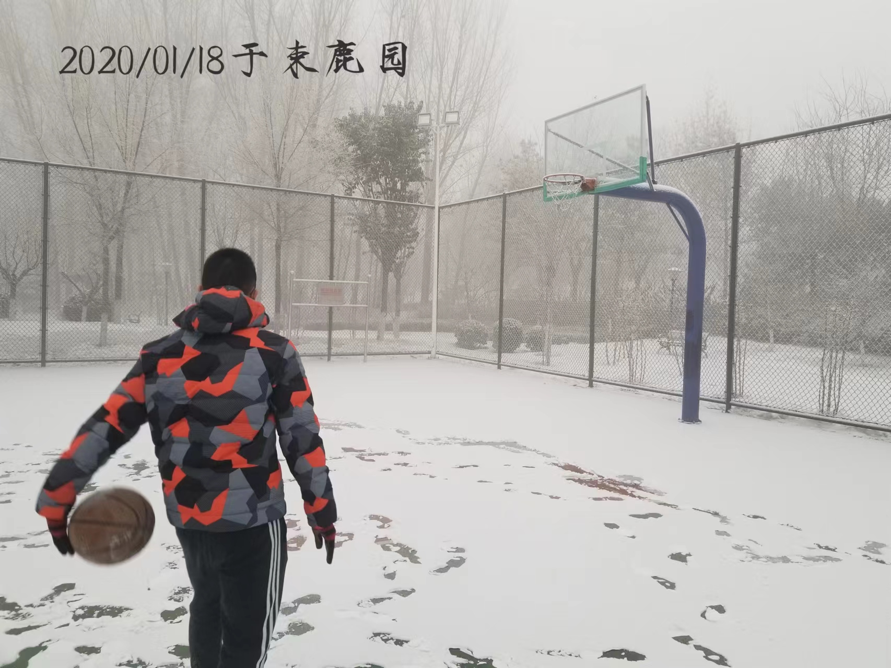
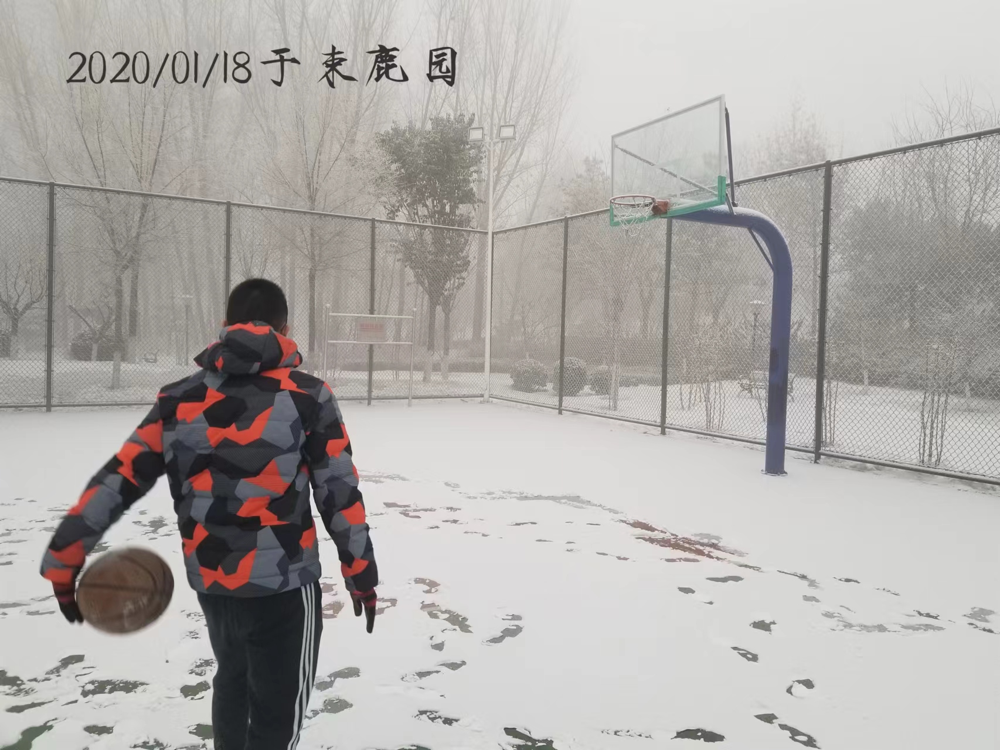

辛集市,
地处 N 37°38'~38°08'; E 115°07'~115°28'之间,位于河北省中南部,
西距石家庄市65公里,东距衡水市45公里;
1986年3月国务院批准改为辛集市(原为束鹿县)。2022年辛集市面积951平方千米,
全市常住总人口59.08万人;截至2022年10月,辛集市辖8镇7乡,共344个行政村,
24个社区。 截至2022年末,辛集常住人口为59.08万人。
2022年,辛集市生产总值实现431.3亿元。其中,第一产业增加值56.5亿元,增长3.4%;
第二产业增加值254.8亿元;第三产业增加值120.0亿元。
三次产业比例为13.1:59.1:27.8,全年人均生产总值72744元。


 
